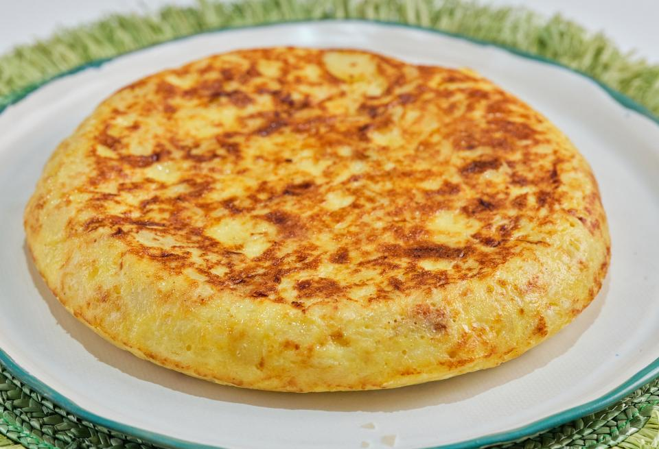

Tortilla de Papas
Home

Description
The tortilla de papas is Spain’s thick, golden love letter to potatoes and eggs. It’s not just an omelet—it’s a hearty, carb-loaded masterpiece that can be eaten at any hour. With just a few simple ingredients—potatoes, eggs, salt, and (if you dare) onions—it achieves legendary status. The real thrill? The flip. One wrong move, and your culinary dreams turn into scrambled disaster.
Served hot, cold, or at 2 a.m. straight from the fridge, tortilla de papas is comfort food with a side of family debate (onion or no onion?). Every Spanish abuela has the perfect recipe, and every bite feels like home. Simple, satisfying, and undeniably delicious—it’s a dish that always delivers.
Ingredients
- 4 Large Potatoes
- 6 Large Eggs
- 1 Medium Onion
- 1 Cup Olive Oil (250ml)
- Salt
- Black Pepper
Recipe
- Prep the Potatoes & Onion: Thinly slice the potatoes (about 2-3mm thick). If using onion, finely chop it.
- Fry the Potatoes & Onion: In a large non-stick pan, heat the olive oil over medium heat.Add the potatoes and onion, ensuring they are well coated in oil. Cook gently for 15-20 minutes, stirring occasionally, until the potatoes are soft but not crispy. Drain the potatoes and onion, reserving a little bit of the oil for later.
- Whisk the Eggs: In a large bowl, beat the eggs with salt and pepper. Add the drained potatoes and onion, stirring to coat everything evenly. Let it sit for 5 minutes to absorb flavors.
- Cook the Tortilla: In the same pan, heat a couple of tablespoons of the reserved oil over medium heat. Pour in the egg-potato mixture and spread it evenly. Cook for 4-5 minutes, shaking the pan occasionally.
- The Legendary Flip: Place a large plate over the pan, hold it firmly, and flip the tortilla onto the plate. Slide it back into the pan to cook the other side for another 3-4 minutes.
- Serve & Enjoy: Once golden and slightly firm, slide the tortilla onto a plate. Let it cool slightly before slicing. Serve warm, cold, or at midnight straight from the fridge. 😋